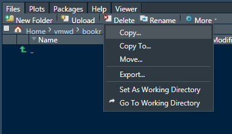
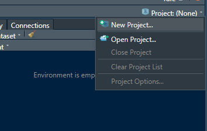
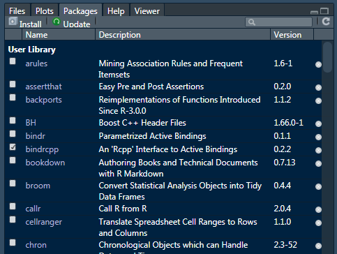

1 Introduction
Rafe C. H. Liu, LastUpdate: 2018-07-10
- why use R?
- R 來自世界上最專業的統計學家
- R 可以輸出高品質的視覺化
- R 有驚人彈性和潛力
- R 很容易和其他工具整合 (C/C++, Java, Python, ODBC, SQL, Hadoop, Spark, SAS, SPSS, Stata, Tensorflow)
- R 很容易擴充和客製化
- 不用錢！
- what R can do?
1.1 Prerequisites
- R 環境設定
- install R Core: The R Project for Statistical Computing
- Powerful IDE (整合開發環境) for R
- Alternative IDE
- R-Studio 使用界面介紹
- Global Options
Code > Saving > Default text encoding
Apperence
Panel layout
- 如何『自學』R 語言
- 善用教學文件
- help() 是很棒的學習資源
- ? 一個問號讓我們更謙卑
- ?? 兩個問號讓我們探索世界
- apropos() 指令部分關鍵字搜尋
- 『視窗編排法』
- 『作中學筆記法』
- COPY & PASTE:
ctrl+c, ctrl+vcmd+c, cmd+v
- 善用註解做筆記：
#ctrl+shift+ccmd+shift+c
- COPY & PASTE:
- 善用教學文件
- 文學院也能懂得程式『語言』
- 語言用來溝通，符號只是簡記，以設定工作目錄為例：
getwd()、setwd() - 從
f(x)說起，理解而非死記：sum(1,2,3,4) - 給統計學家的程式語言
- 語言用來溝通，符號只是簡記，以設定工作目錄為例：
- Shortcuts! 專業的表現
- Run current line/selection
- Ctrl+Enter, Ctrl+r
- Command+Enter
- Keyboard Shortcuts
- IDE 的重要性！什麼都可以忘，就是不能忘記 [TAB] 鍵
- Run current line/selection
1.2 Working Directory
- 設定 R 環境的工作目錄
- 工作目錄的設定與讀取電腦上檔案位置有關，以絕對目錄或相對目錄表示，適當的調整有助於工作流程的順暢
- RStudio IDE 的使用者可以發現工作目錄會顯示在 Console 介面的上方
- 利用
getwd來查詢目前的工作目錄 - 想要更改工作目錄可以用
setwd(dir)這個指令，參數dir表示想要指向的工作目錄 - 目錄表達方式 Windows
'D:\Users\'與 Max, Linux/home/user/...不同

getwd()
setwd("/home/user/data_thinking_with_r")
getwd()1.2.1 R project
- 工作環境
- 重啟 IDE 之後，工作環境會回到初始設定
- 使用 google drive / Dropbox 面臨不同作業系統目錄轉換問題
- Using Projects

1.3 Packages
- The Comprehensive R Archive Network - CRAN
- 套件安裝 (僅需安裝一次) /
install.packages("package.name") - 載入套件 /
library(package.name)- 每次重啟 r session 需重新呼叫
- 載入有先後順序，後載入之函數若有同樣命名，則會覆蓋先載入之套件函數
- 可使用
package.name::function.name直接取用函數

1.4 Resources
Rafe C.H. Liu (劉佳欣)
Data Thinking, Machine Learning & E-commerce expert
Contact Info | Linkedin Profile
Data Thinking, Machine Learning & E-commerce expert
Contact Info | Linkedin Profile